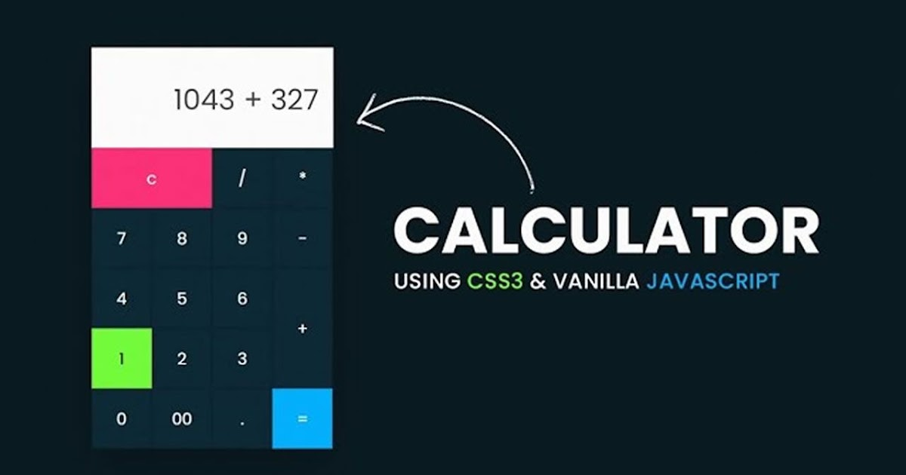

Calculator
A calculator is a device that performs arithmetic operations on numbers. The simplest calculators can do only addition, subtraction, multiplication, and division. More sophisticated calculators can handle exponent ial operations, roots, logarithm s, trigonometric functions, and hyperbolic functions. Internally, some calculators actually perform all of these functions by repeated processes of addition.
As calculators became more advanced during the 1970s, they became able to make computations involving variables (unknowns). These were the first personal computers. Today's personal computers can still perform such operations, and most are provided with a virtual calculator program that actually looks, on screen, like a handheld calculator. The buttons are actuated by pointing and clicking.
Theoretically, a modern computer is a calculator that works with binary numbers and has a much larger memory. But in the practical sense, a computer is far more than a mere calculator, because of the wide variety of non-computational tasks it can perform.
Operations
The simplest calculators can do only addition, subtraction, multiplication, and division. More sophisticated calculators can handle exponent ial operations, roots, logarithm s, trigonometric functions, and hyperbolic functions.
Addition
When we have to add two numbers then we use the addition operation and this operation is carried out by the + symbol on calculator.
Multiplication
When we have to multiply two numbers then we use the multiplication operation and this operation is carried out by the X symbol on calculator.
Substraction
When we have to Substract two numbers then we use the Substraction operation and this operation is carried out by the - symbol on calculator.
Division
When we have to add two numbers then we use the division operation and this operation is carried out by the / symbol on calculator.
Percentage
When we have to calculate percentage then we use the percentage symbol and this operation is carried out by the % symbol on calculator.